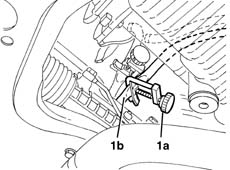
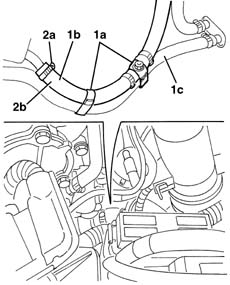
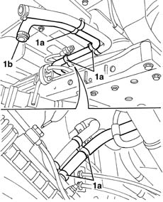

5020M59 coolant intake hose to supplementary independant heater unit r r with heater unit removed
- Path
- Procedures > 50 AUXILIARY UNITS > 5020 HEATER > 5020M supplementary independent heater > 5020M59 coolant intake hose to supplementary independant heater unit r r with heater unit removed
- Kind
- repair procedure (removal / refitting; the operation number is the code)
- Applies to
- all engines; all production periods
- Interactive page
- https://sloeber94.github.io/elrnDB-fMltpl/en/#/2891799
Applies to: all engines; production: da 09/03, da 04/02 a 08/03
 Removing
Removing
 Refitting
Refitting1. Remove the clamp (1a) from the pipe (1b) and let the power unit coolant flow into a suitable container.

Applies to: all engines; production: da 09/03, da 04/02 a 08/03
Lower the vehicle and open the bonnet.
1. Open the bands (1a) connecting the pipes (1b) to the additional heater (1c) and to the climate control casing.
2. Loosen the bands (2a) and disconnect the pipe (2b).

Applies to: all engines; production: da 09/03, da 04/02 a 08/03
1. Raise the vehicle and disconnect the bands (1a), then remove the heater fluid inlet pipe (1b).

Applies to: all engines; production: da 09/03, da 04/02 a 08/03
Refitting
RemovingCheck that the heater fluid inlet pipe is not damaged.
Place the heater fluid inlet pipe in position and connect the bands.
Lower the vehicle, connect the pipe and tighten the band.
Fit the bands connecting the pipe to the additional heater with the pipe to the climate control casing.